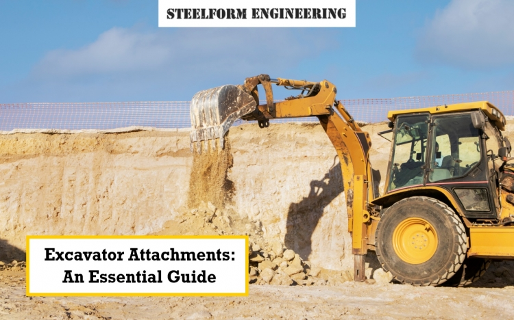

Excavator Attachments: An Essential Guide
Excavator attachments are indispensable tools in the construction and earthmoving industry, significantly enhancing efficiency and productivity. By equipping your excavator with the right attachments, you can tackle a wide range of tasks with precision and speed.
Why Are Excavator Attachments Important?
Excavator attachments are essential tools that significantly enhance the efficiency, versatility, and overall performance of excavators. By equipping your excavator with the right attachments, you can expand its capabilities and tackle a wider range of tasks, from demolition and excavation to grading and landscaping.
Steelform Engineering, a trusted name in the industry, offers a comprehensive range of durable and reliable excavator attachments. Our products are designed to optimise your operations and deliver exceptional results.
Key Excavator Attachments and Their Uses
1. Hammer Head Plates
Designed for heavy-duty demolition tasks, such as breaking concrete and rock.
Deliver powerful impacts with precision, ensuring efficient and effective demolition.
2. Compaction Wheels
Ideal for compacting soil and other materials after excavation or grading.
Significantly reduce the time and effort required for manual compaction methods, improving productivity.
3. Ripper Tynes
Used for breaking up hard, compacted soil, rock, and tough terrain.
Ripper Tynes prepare the ground for excavation, making it easier to dig and remove materials.
4. Grader Blades
Used for levelling and grading surfaces, such as roads, driveways, and construction sites.
Grader blades provide high precision and control for accurate grading and finishing work.
5. Excavator Buckets
Versatile attachments for digging, scooping, and loading materials.
Available in various types, including:
General-purpose buckets: Suitable for a wide range of tasks.
Trenching buckets: Designed for digging narrow trenches.
Rock buckets: Ideal for handling heavy rocks and debris.
Customisable to suit specific applications and job site conditions.
By investing in the right excavator attachments, you can maximise the potential of your equipment and achieve optimal performance. Steelform Engineering is committed to providing innovative solutions that meet your needs and exceed your expectations.
Choosing the Right Excavator Attachments in Melbourne
Selecting the appropriate excavator attachments is crucial for optimising your construction or earthmoving project. To make informed decisions, consider the following factors:
Project Requirements:
Demolition: Hammerhead plates are essential for breaking concrete and other materials.
Excavation: Buckets of various sizes and types are required for digging and loading.
Grading and levelling: Grader blades are ideal for creating smooth surfaces.
Compaction: Compaction wheels ensure soil stability.
Ripping: Ripper tynes are necessary for breaking through tough terrain.
Terrain Type: The type of terrain will influence the choice of attachments. For example, rocky terrain may require heavy-duty rock buckets and ripper tynes.
Equipment Compatibility: Ensure that the attachments are compatible with your excavator's make, model, and hydraulic system.
Real-World Applications
Hammerhead plates and ripper tynes are indispensable tools in various construction and demolition projects. Here are some real-world examples of their successful applications:
- Demolition of Concrete Structures: Hammerhead plates are used to efficiently break down concrete buildings, bridges, and other structures, preparing the site for redevelopment.
- Road Construction and Repair: Ripper tynes are employed to break up asphalt and concrete surfaces, allowing for the removal of damaged sections and the laying of new pavement.
- Excavation in Rocky Terrain: Ripper tynes can penetrate tough rock formations, making excavation easier and faster.
- Foundation Preparation: Hammerhead plates and ripper tynes can be used to remove old foundations and prepare the ground for new construction.
Maintenance Tips for Excavator Attachments
Proper maintenance is crucial to ensure the longevity and optimal performance of your excavator attachments. Follow these tips:
Routine Inspection and Cleaning:
Regularly inspect attachments for damage, wear, and tear.
Clean attachments after each use to remove dirt and debris.
Lubricate moving parts to prevent rust and corrosion.
Proper Storage:
Store attachments in a dry, sheltered area to protect them from the elements.
Cover attachments to prevent dust and debris accumulation.
For professional repairs, maintenance, and replacements, trust Steelform Engineering. Our experienced technicians can identify and address any issues promptly.
By following these maintenance tips and partnering with Steelform Engineering, you can maximise the lifespan and performance of your excavator attachments.
Conclusion
At Steelform Engineering, we are proud to be a leading provider of high-quality excavator attachments in Melbourne. Our extensive range of products is designed to meet the diverse needs of construction professionals. From standard excavator buckets to specialised attachments for specific applications, we have the solution to optimise your operations.